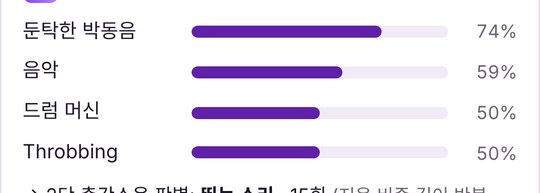
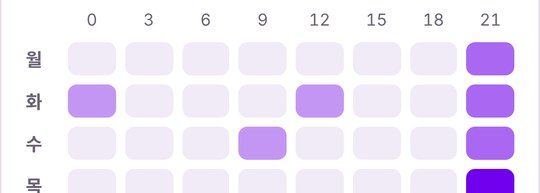

과기부 × 엘리스 AI 챌린지 · 서비스 기획안
쿵쾅 — 층간소음, 감정 대신 기록으로
층간소음을 녹음하면 AI가 소리를 판정하고, 해결 방법과 서류까지 챙겨 주는 앱
팀 미나리 백김치 · 성인 부문
김혜수(대표) · 김수희 · 백승유 · 김채원
PoC 바로 써보기
team-minari-white-kimch.github.io/kungkwang
→
2AI 판별발소리·망치질 등 종류와
법정 기준 초과 여부
→
→
4해결상황에 맞는 방법 추천,
서류는 AI가 작성
01해결하고 싶은 문제
상담은 많은데, 해결 단계로 갈 '기록'이 없다
- 피해자는 참거나, 직접 찾아가거나 둘 중 하나를 고릅니다.
찾아가면 감정이 앞서 다툼·보복으로 번집니다.
- 피해자 손에는 기억과 녹음 파일뿐이라,
무슨 소리인지·기준을 넘었는지 말하지 못합니다.
- 공식 절차는 언제·어떤 소리가·얼마나 났는지 묻습니다.
관리사무소 → 관리위원회 → 이웃사이센터 → 분쟁조정
- 소음측정 앱은 dB 숫자만, 공식 측정은 측정일 하루만 담습니다.
그 사이를 채울 기록이 비어 있습니다.
102,124건
이웃사이센터 전화상담
3년(2023~2025)
8.8%
분쟁조정 성립률
신청 148건 중 13건
원인의 74%가 뛰거나 걷는 소리
2024년 원인별 접수 7,033건
뛰거나 걷는 소리74.0%
망치질12.9%
가구 끌기4.6%
기타8.5%
기준 초과 판정은 4년 새 5배
현장 측정 후 법정 기준 초과로 판정된 건수
20202021202220232024
02문제를 겪는 사람
| 사용자 | 상황 | 쿵쾅으로 얻는 것 |
|---|
| 피해 세대 (주 사용자) | 공동주택에서 반복되는 소음에 시달림 | 판단 근거, 바로 낼 수 있는 일지·서류 |
| 관리사무소·관리위원회 | 신고를 받아도 양쪽 주장만 남아 확인이 어려움 | 시각·소리 종류가 정리된 기록으로 사실 확인 |
| 이웃사이센터·지자체 | 측정이 필요한 세대를 가려내기 어려움 | 상담 전 사전 자료, 측정 우선순위 판단 |
03서비스명 · 제작 목적 · 주요 화면
서비스명쿵쾅 — 층간소음 AI 소음 일지 (휴대폰 웹앱, 설치·가입 없음)
제작 목적감정 대신 믿을 만한 기록으로 대화하게 해, 다툼 전에 공식 절차로 해결하도록 돕기
쿵쾅 — 층간소음, 감정 대신 기록으로팀 미나리 백김치 · 서비스 기획안
04핵심 기능 3가지
기준 판정에서 멈추지 않고, 해결까지
1원터치 소리 판정무슨 소리인지, 기준을 넘었는지

- 걷기·뛰기·망치·가구 끌기를 AI가 구분
- 주·야간 법정 기준 초과 바로 판정
- 자는 동안 큰 소리만 자동 기록
2AI 소음 일지쌓인 기록이 그대로 근거가 되도록

- 날짜·시간대·종류별 자동 정리
- AI 인사이트로 반복 패턴 한 줄 요약
- 생활 피해 기록, 가족과 함께 기록
- 기록에 맞는 해결 방법 추천
- AI가 알림서·신청서 초안 작성
- 대응 기록 → 조정 경위서 자동 반영
해결 경로이웃에게 알리기→관리사무소 사실 확인·중단 권고→관리위원회 조정→이웃사이센터 상담·측정→분쟁조정 신청
단계마다 AI가 서류 초안 작성 — 예: 관리사무소 알림서 “23일간 34차례 기록, 64%가 야간입니다. 사실관계 확인과 중단 권고를 요청합니다.”
05제작에 활용할 AI · 도구
소리는 휴대폰 밖으로 나가지 않습니다
녹음→소리 구간 찾기→AI 1단 · 소리 인식→AI 2단 · 판별 규칙→법정 기준 비교→생성형 AI · 서류
| AI 요소 | 하는 일 | 이 방식을 고른 이유 |
|---|
| 소리 인식 AI | YAMNet이 발소리·망치·가구·음악·말소리를 구분 | 공개 모델을 기기 안에서 실행, 서버 비용 0·원본 전송 없음 |
| 판별 규칙 | 저음 비중·길이·발걸음 간격으로 4종 구분, 섞인 소리는 구간별 집계 | 범용 모델이 둔한 충격음을 음악·드럼으로 오인하는 점 보완 |
| 법정 기준 비교 | 1분 등가·최고소음도를 주간·야간 기준과 비교 | 판정 근거를 숫자·조문으로 보이려 산식으로 처리 |
| 생성형 AI | 선택한 기록으로 알림서·상담 요청문·조정 신청 초안 작성 | 감정을 뺀 사실 중심 문장, 요약 숫자만 전달 |
전용 AI 학습 계획데이터실제 녹음 500건(5종×100)학습YAMNet+층간소음 분류층목표정확도 90%↑ (선행 연구 약 95%, Shin 외 2020)
06측정 정확도 · 소리 보정
해결 절차에서 근거로 쓸 수 있는 기록이 되도록
실내 테스트 · 아이폰 16 · 같은 소리를 세 번 측정
보정 후, 외부 측정 앱과 0.6dB 차이
쿵쾅 보정 전56.1
쿵쾅 보정 후39.0
외부 측정 앱38.4
평균 소음(Leq, dB) · 오차 +17.7 → +0.6dB
1공식 측정 방식 그대로A특성·빠름(F) 계산, 1분 등가·최고소음도, 배경소음 보정, 휴대폰 두는 자리 안내
KS C IEC 61672-1 · 소음·진동 공정시험기준
2휴대폰마다 8초 보정통화용 자동 음량·잡음 억제를 끄고, 기준음으로 마이크 감도를 맞춤. 소음계가 있으면 정밀 보정
보정 안 한 휴대폰은 오차 표준편차 6.8~9.6dB (Murphy·King, 2016)
3오차를 숨기지 않는 판정보정 수준별 오차범위 ±8 · ±6 · ±2dB를 반영, 겹치면 '기준 근처'로 표시
±2dB: 일반 소음계(등급 2) 허용오차 수준 (ANSI S1.4)
다음 검증: 휴대폰 기종과 음량을 늘리고, 소음계와 같은 순간에 나란히 측정
07다른 서비스와의 차별점
기록에서 끝나지 않고, 기준 판정과 해결 서류까지
| 구분 | 일반 소음측정 앱 | 층간소음 기록 앱 | 쿵쾅 |
|---|
| 소리 종류 | 구분 없음 | 일부 종류 표시 | AI가 자동 구분, 섞인 소리까지 집계 |
| 법정 기준 | dB 숫자만 | dB 값 기록 | 주·야간 법정 기준 판정, 휴대폰별 dB 보정 |
| 해결 연결 | 없음 | 절차 안내 수준 | 아파트 맞춤 추천 + AI가 신청 서류 작성 |
| 대응 과정 | 없음 | 소음 기록 위주 | 대응 기록 → 분쟁조정 경위서 자동 반영 |
| 함께 쓰기 | 혼자 | 개인 기록, 앱 설치 | 가족 공동 기록, 설치 없이 링크로 시작 |
08서비스 기대 효과
피해 세대감정 대신 근거로 말하고, 직접 대면 없이 공식 절차를 밟음
관리사무소시각·종류가 정리된 기록으로 사실 확인과 중단 권고
상담 기관상담 전 자료로 측정이 필요한 세대를 먼저 판단
사회이웃 간 다툼이 폭력·형사 사건으로 번지기 전에 차단
09역할 분담
김혜수 대표 · 서비스 기획 총괄, PoC 개발·배포김수희 서비스 기획·디자인백승유 AI 에이전트 개발·구현김채원 AI 에이전트 개발